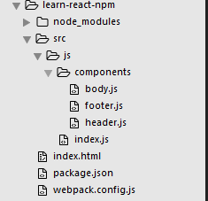
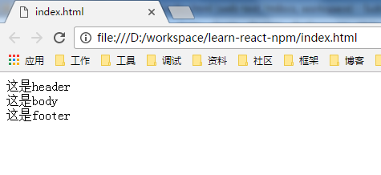

如果开发环境没有搭建好，请参考react开发环境配置来搭建。
新建components目录，下面新建三个文件header.js、footer.js、body.js，目录结构如下
header.js代码
var React = require('react')
var ReactDom = require('react-dom')
export default class ComponentHeader extends React.Component {
render() {
return (
<header>这是header</header>
);
}
}
footer.js代码
var React = require('react')
var ReactDom = require('react-dom')
export default class ComponentFooter extends React.Component {
render() {
return (
<footer>这是footer</footer>
);
}
}
body.js代码
var React = require('react')
var ReactDom = require('react-dom')
export default class ComponentBody extends React.Component {
render() {
return (
<div>这是body</div>
);
}
}
上面这三个组件大体相似，引入react和react-dom，通过class ComponentHeader extends React.Component定义一个新组件，通过export default导出模块。
这三个组件被应用到index.js中
index.js代码
var React = require('react')
var ReactDom = require('react-dom')
import ComponentHeader from './components/header.js'
import ComponentBody from './components/body.js'
import ComponentFooter from './components/footer.js'
class Index extends React.Component {
render() {
return (
<div>
<ComponentHeader/>
<ComponentBody/>
<ComponentFooter/>
</div>
)
}
}
ReactDom.render(
<Index/>,
document.getElementById('example')
)
首先引入react和react-dom，通过import引入ComponentHeader、ComponentBody、ComponentFooter组件。这三个组件被应用到Index组件中。
最后通过ReactDom.render将组件转为HTML，插入到指定节点。
执行webpack打包文件，打开index.html，效果如下
